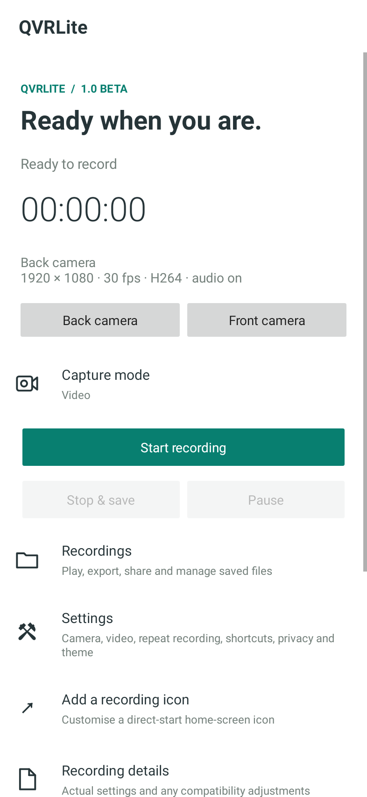
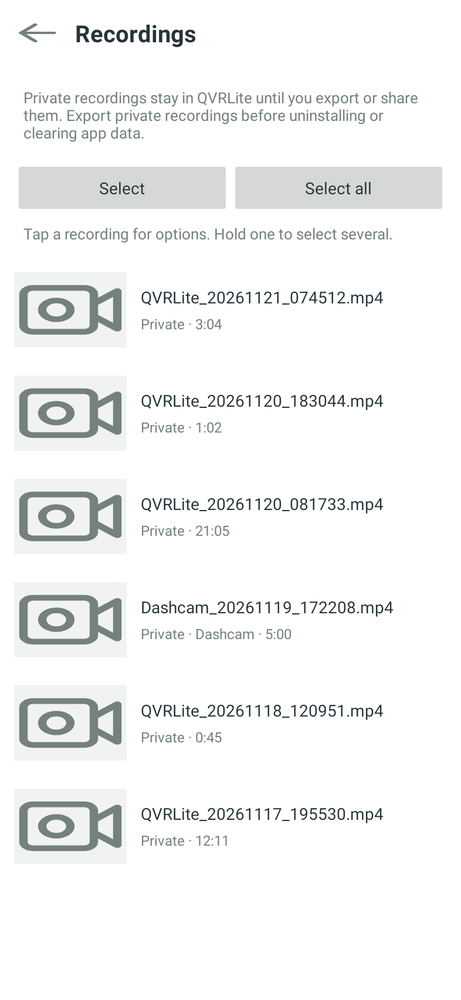
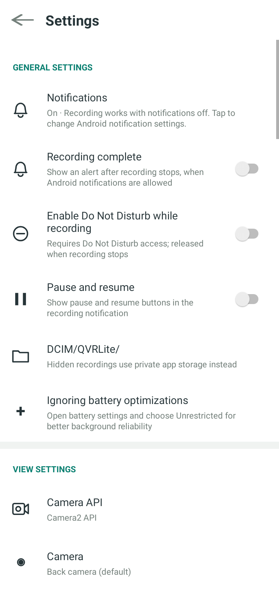
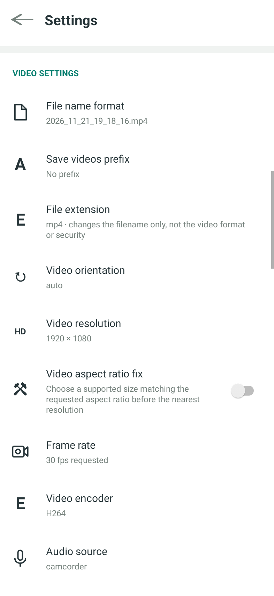
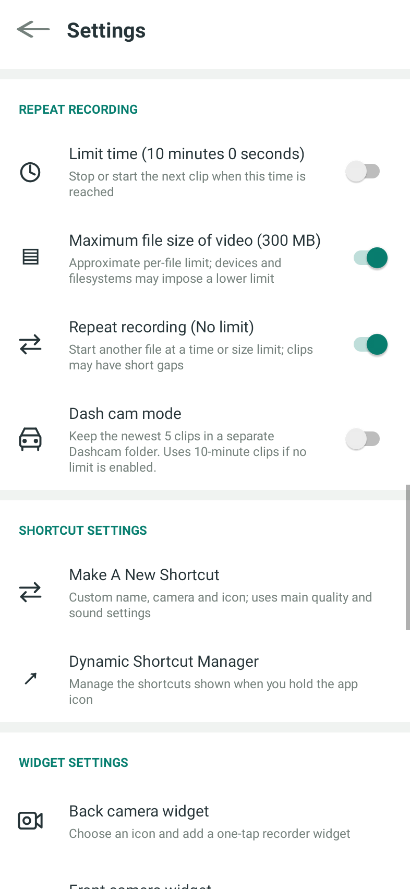
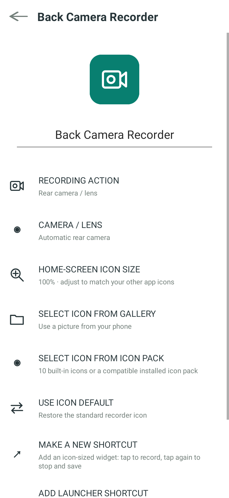
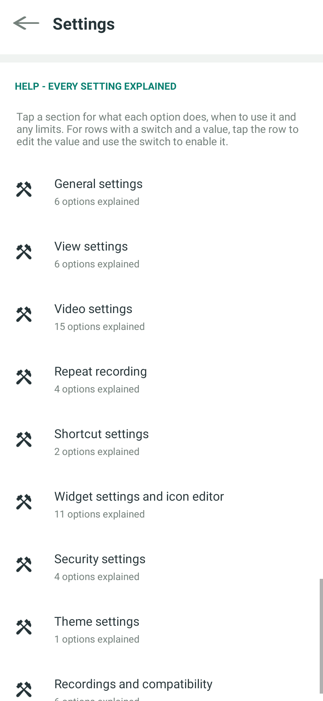

The quick recorder, with less to set up
QVRLite is a simpler version of QVR. Tap a recording icon on your home screen to start, and tap it again to stop and save.
It installs as a separate app beside QVR, with its own settings and recordings, and leaves out the flashlight, location tagging and vibration.
Beta. QVRLite is in beta. It works and has been tested on phones, with more improvements on the way.
Recording people is covered by the law. What the law says
- Version 1.0.0 beta 1
- Android 10 or later
- 0.5 MB
- Beta
Free, with nothing to unlock. No adverts, no account with the developer, no tracking. Compare or read the release notes.
Chrome may say the file might be harmful. It shows this for app files that do not come from Google Play. Choose Download anyway.

- No internet accessThe app cannot send anything anywhere.
- No locationIt never asks where you are.
- No advertsNone in the app and none on this site.
- Beside QVRA separate app. Neither touches the other.
A look inside
These are the real screens, drawn from the app's own code with made-up recordings. Video previews need a real phone, so the recordings list shows the app's own placeholder. Swipe or scroll sideways to see them all.






How it works
Fewer settings, the same one-tap recording.
Make a recording icon
Choose the camera and a picture, then add the icon to your home screen.
Tap to record
Recording starts straight away at 1080p, 30 frames a second, with sound.
Tap again to save
The video is saved privately inside QVRLite, ready to play, share or export.
Everything is in, and all of it is free
Nothing below is held back for a paid tier, because there is no paid tier.
Recording
- One-tap icons and widgets
- Start and stop from the home screen.
- Camera and lens
- Back, front or a chosen lens.
- Pause and resume
- From the main screen or the notification.
- Quality and sound
- Resolution, frame rate and audio settings.
Long recordings
- Limits and repeat
- A 300 MB file limit and repeat recording are on from the start.
- Dashcam mode
- Keeps the newest clips and removes the oldest.
Your recordings
- Private by default
- New recordings stay inside QVRLite, out of the gallery.
- Recordings list
- Previews and lengths, with export and bulk delete.
- PIN lock
- Protects settings and recordings.
Even less to worry about
No internet access
QVRLite cannot connect to the internet.
No location
It does not ask for location, and adds none to your videos.
No ads, no tracking
Nothing in the app or on this site.
Use it within the law
QVR apps record video and sound, and can keep recording with the screen off. Who and where you record, and what you do with the recordings, is your responsibility.
- UK GDPR and the Data Protection Act 2018. Recording identifiable people is processing their personal data. If you record beyond your own home and private life, data protection law is likely to apply to you. The Information Commissioner's Office has guidance at ico.org.uk.
- Protection from Harassment Act 1997. Using a camera to watch, follow or keep a record of someone can be harassment.
- Sexual Offences Act 2003, section 67 (voyeurism). Recording people in places where they expect privacy, such as a bathroom, a changing room or a bedroom, is a crime.
- Covert recording. Recording someone without their knowledge can break data protection law, workplace rules and the rules of the place you are in, and recordings made that way may not be accepted as evidence. If in doubt, tell people they are being recorded.
Laws differ in other countries. If you are not in the UK, the rules where you are apply. Read the terms of use.
Installing and updating
QVRLite is not on Google Play, so your phone asks a couple of extra questions the first time.
Download the app file
Tap Download on your phone. The file is called QVRLite.apk and is about 0.5 MB. If Chrome says the file might be harmful, choose Download anyway. First tick the box to say you will use the app within the law.
Allow the install
Open the file. The first time, Android asks you to allow your browser to install apps. Allow it, go back and tap Install. If Google Play Protect steps in, choose More details, then Install anyway.
Updating later
QVRLite tells you when a newer version is out. Install the new file over the old one and everything you have saved is kept.
Version 1.0.0 beta 1, released 21 November 2026. See the release notes, or check your download.
Questions
Is QVRLite free?
Yes. There is no paid version, no subscription and no adverts.
How is it different from QVR?
It has fewer settings and no flashlight, location tagging, vibration or manual exposure. Recordings are private by default.
Can I have both?
Yes. QVRLite is a separate app with its own settings and recordings. It does not import QVR's recordings.
Is it on Google Play?
No. It is downloaded from this site as an Android app file. It needs Android 10 or later.
How do I update it?
Install the new version over the one you have. Do not uninstall first, or private recordings are lost.
Simple, quick and private
Free, with no adverts and nothing to unlock. Made by the developer of several other free Android apps: see them all.